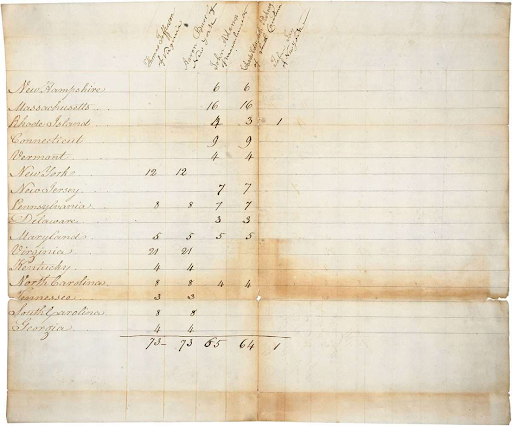
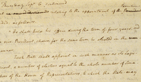

Jefferson was born April 13, 1743, on his father’s plantation of Shadwell located along the Rivanna River near the Blue Ridge Mountains of colonial Virginia. His father Peter Jefferson was a successful planter and surveyor, and his mother, Jane Randolph, was a member of one of Virginia’s most distinguished families. When Jefferson was fourteen, his father died, and he inherited a sizable estate of approximately 5,000 acres.
Thomas Jefferson received a good formal education. In his autobiography, Jefferson wrote that his father, Peter Jefferson, "placed me at the English school at 5. years of age and at the Latin at 9. where I continued until his death." The Latin school was conducted by the Reverend William Douglas, of whom Jefferson wrote, "he was but a superficial Latinist, less instructed in Greek, but with the rudiments of these languages he taught me French."
Early in 1758, Jefferson began attending the school of Reverend James Maury, whom Jefferson credited as "a correct classical scholar." He continued studies with Reverend Maury for two years before entering the College of William and Mary in Williamsburg in the spring of 1760, at the age of seventeen. He had also made a name for himself as the commander of the local militia, a talented surveyor, and a country politician.He boarded with the local schoolmaster to learn Latin and Greek until 1760, when he entered the College of William & Mary in Williamsburg.

